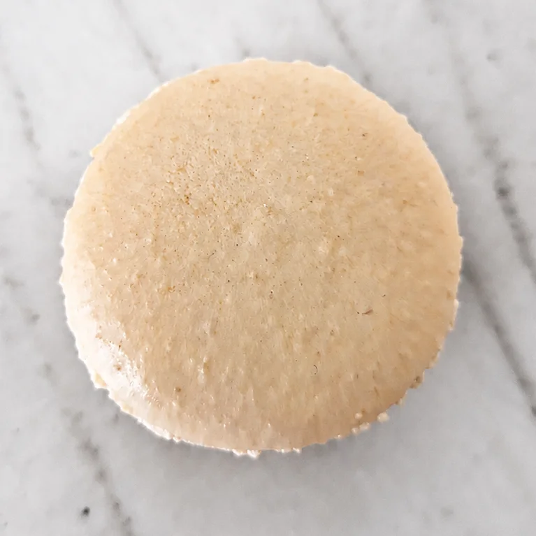
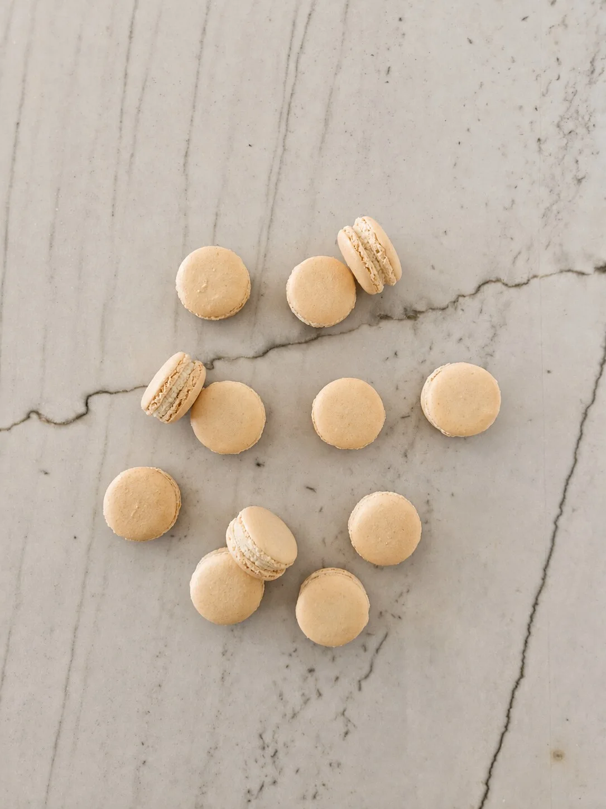
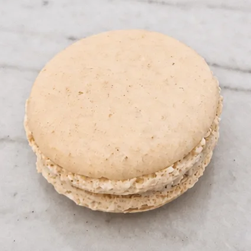
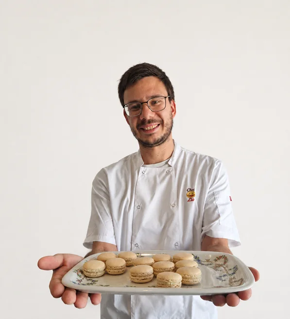

Macarons personnalisés · Boécourt, Jura
Des macarons à votre image.
Mes macarons sont fabriqués avec passion et sélectionnés avec soin, pour un mariage, un anniversaire ou des cadeaux d'entreprise.
Lionel Loeffel, artisan du macaron

mesure
Chaque événement mérite une touche sucrée
Pour vos grands jours, et les autres.
Je me spécialise dans la création de macarons pour tous vos événements spéciaux, qu'il s'agisse d'un particulier ou d'une entreprise.
- 01
Mariage
Des macarons accordés au thème de la fête.
- 02
Anniversaire
Une attention à partager avec vos invités.
- 03
Cadeaux d'entreprise
Couleurs et designs alignés sur votre marque.
- 04
Tout autre événement
Racontez-moi votre idée, on en parle.

La magie des détails
Personnalisés, du goût à la couleur.
Vos couleurs, votre design
Les couleurs et les designs s'alignent avec votre thème ou votre marque.
Des classiques aux combinaisons audacieuses
Une variété de saveurs, fabriquées avec des ingrédients de haute qualité.
Une présentation impeccable
Une attention particulière aux détails, pour ravir vos convives.
« Je crois en la magie des détails et en la personnalisation. »Lionel Loeffel, Chez Lio
Les classiques
Chocolat, pistache, vanille.
Qui n'a jamais craqué pour un macaron chocolat, pistache ou vanille ? Ce sont mes parfums les plus communs.
- Chocolat
- Pistache
- Vanille

Le macaron vanille, de profil et de dessus.

À propos
Lionel Loeffel, artisan du macaron.
Chez Lio Sàrl est une adresse pour des macarons réalisés avec passion. Je me spécialise dans les macarons personnalisés pour les mariages, les anniversaires et les événements d'entreprise.
Je mets un point d'honneur à offrir des saveurs uniques et une présentation impeccable. Que vous soyez un particulier ou une entreprise, je m'engage à transformer vos idées en douceurs.
Commander
Parlons de votre événement.
N'hésitez pas à me contacter pour toute demande. Je suis là pour vous accompagner dans la réalisation de vos projets sucrés.
- Atelier
- Boécourt, Jura
- Téléphone
- +41 79 893 37 09
- info@chezlio.ch
- @chez.lio